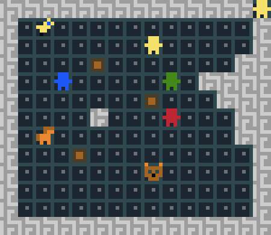
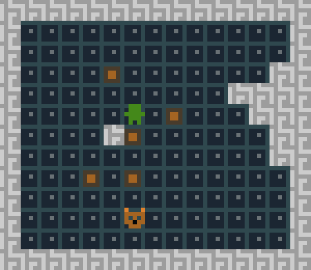

Other games
Other games My name is Steve Tonneau.On this page you will find the first playable version of my mini ludum dare 48 entry, pet theft.
Any comments on this early version are more than welcome. Send them to the adress mynamemylastname_at_hotmail.fr
Scroll down for the game description and rules:
Required material:
- A headset
- a web browser
- a friend :)
Game description:
Pet Theft is a two player infiltration game. The first player (player1), controls a red character
.
Its goal is to steal one of the three pets available in the map: a horse
, a cat
, or a bird
.
The actual target is randomly determined at startup, and player1 is the only one to know which
pet is its real objective.
On the other hand player2 alternatively controls 3 characters
(green
, yellow
 and blue
) to prevent player1 from reaching a target.
and blue
) to prevent player1 from reaching a target.
and blue
) to prevent player1 from reaching a target.
This task is hardened by the fact that the red character is invisible, unless a straight line, free of obstacles
can be traced between the red character and any other character.
Possible actions:
- Moving a character is achieved using the WASD keys or the directional arrows. It is recommanded for the player1 to use the WASD keys. An icon in the top right corner indicates which character is to be moved.

- Pushing a crate is done automatically when a character walks into a tile occupied by a crate. Several crates can be pushed at the same time. Crates won't be pushed into tiles occupied by a wall, a character, or an objective.

- The red character is only visible if there are no obstacles between him and at least one other character. Obstacles can be:
- a crate
- a wall
- an objective
- Once per game, player1 can press X and create a doppelganger on the tile he is currently occupying. This can be used to trick player2.
In-game walkthrough:
-
Player1 starts. Before performing its first move, he must make sure his headset is on. After its initial move a sound is played.
The sound matches with an animal and indicates to player1 its real objective (click on image to hear the associated sound).
- Horse sound:
- Cat sound:
- Bird sound:
- Horse sound:
- Player2 plays after, moving the green, yellow and blue characters successively.
- Then it's player1's turn, and so on.
-
If player1 tries to move into a wall, a sound warns him:
-
If player1 is visible, a sound warns him (to avoid confusion with the doppelganger):
- Player1 wins if the red character "walks" on the objective.
- Player2 wins if any character "walks" on the red character.